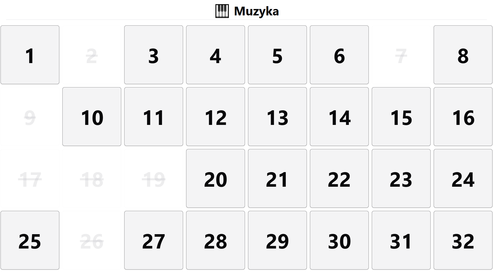

Dwa ekrany, jedna maszyna
Panel zostaje na Twoim laptopie — z odpowiedziami, notatkami i punktacją. Ekran gry trafia na projektor i pokazuje tylko to, co odsłonisz, wtedy, kiedy chcesz.
Triviacon zamienia jeden laptop w quizowe show na dwóch ekranach: Ty sterujesz z panelu, a sala ogląda ekran gry na projektorze lub telewizorze.


Zbudowany przez prowadzącego quizy, testowany w prawdziwych salach — z prawdziwymi projektorami i słabym WiFi.
Panel zostaje na Twoim laptopie — z odpowiedziami, notatkami i punktacją. Ekran gry trafia na projektor i pokazuje tylko to, co odsłonisz, wtedy, kiedy chcesz.
Jedna odpowiedź, wielokrotny wybór i lista — z formatowaniem tekstu.
Media do pytania oraz osobny slot odsłaniany z odpowiedzią. Tryb „tylko dźwięk” ukrywa wideo, które zdradziłoby odpowiedź.
Punktacja na żywo z połówkami punktów, etapowe odsłanianie podium i dogrywki, które rozstrzygają uczciwie.
Licznik czasu dla każdego pytania i notatki widoczne tylko dla Ciebie.
Plik .tcq zawiera pytania i media. Udostępniaj, archiwizuj, otwieraj gdziekolwiek. Zapis odporny na awarie.
Dziesięć wbudowanych motywów panelu i własny ekran powitalny z grafiką i muzyką. Po polsku i po angielsku — a nowy język to tylko kolejny plik tłumaczeń.
Wybierz etap — w trakcie gry przełączasz się między nimi swobodnie.
Panel pokazuje każde pytanie z odpowiedzią; publiczność widzi tylko, które są jeszcze w grze.
Dodaj kategorie, pytania i media w Kreatorze — albo otwórz cudzy plik .tcq.
Wpisz drużyny i naciśnij Start, gdy wszyscy siedzą na miejscach.
Jedno kliknięcie i przeciągnij okno na projektor lub drugi monitor.
Odsłaniaj pytania i odpowiedzi, przyznawaj punkty i zakończ podium.
„Samochód tam, gdzie był rower — ale nigdy nie prowadzi sam.”
Bez instalatora i uprawnień administratora. Ustawienia leżą obok aplikacji, więc nie zostawia śladów.
triviacon.exechmod +xTriviacon.appOtwórz go w Triviaconie i przeklikaj całą grę — wszystkie rodzaje mediów, w tym wideo w trybie „tylko dźwięk”. Media wygenerowane przez AI, wolne do rozpowszechniania.
Nie. Drużyny odpowiadają na kartkach lub na głos — sala tylko ogląda ekran gry. Punkty przyznajesz ręcznie.
Nigdy. Wszystko, łącznie z mediami, jest w pliku .tcq na Twoim komputerze.
Możliwe — wersje nie są jeszcze podpisane cyfrowo. Na macOS za pierwszym razem kliknij aplikację prawym przyciskiem i wybierz Otwórz.
Tak — język to jeden plik JSON z tłumaczeniami. Zapraszamy na GitHuba.